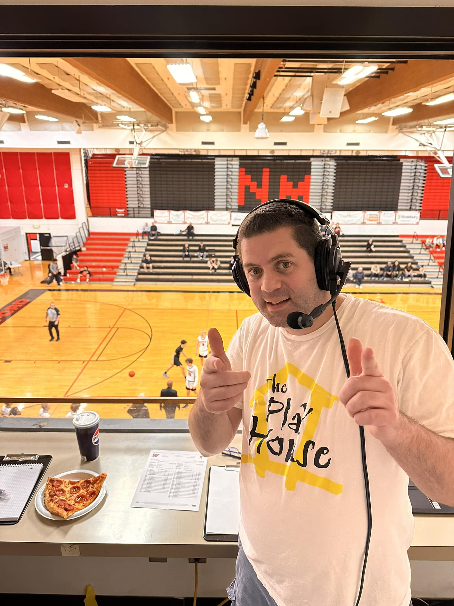

Thomas Gurner | WDD 130
The radio voice of the North Medford Black Tornado and the South Medford Panthers. I'm a broadcast-aholic! Just recently I had the honor and privelage of calling the 2024 OSAA OnPoint Community Credit Union 6A Girls Stagte Championship game between the #6 Techsters of Benson Technical High School and the #1 Panthers of South Medford High School. South won and will be replacing the 2023 runner-up banner in the gym with a much nicer 2024 State Champions banner.